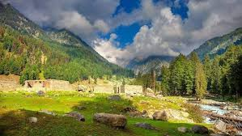
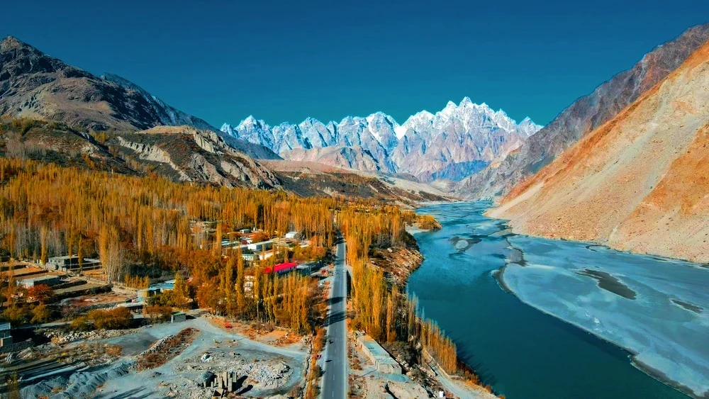
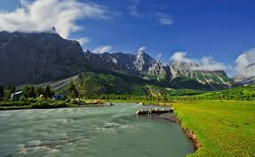
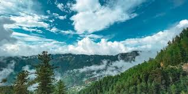

Pakistan is full of beautiful mountains, valleys, lakes, and historical places. This webpage highlights some of the most famous tourist destinations in Pakistan.




Swat Hunza Skardu Murree
Hunza Valley is one of the most beautiful places in Pakistan. It is famous for its high mountains, historical forts, and peaceful environment. Tourists love visiting Hunza because of its breathtaking views and cold weather. The valley is also known for its natural beauty and welcoming culture.
Skardu is a beautiful city in Gilgit-Baltistan and is known as the gateway to K2. It is surrounded by mountains, lakes, and deserts that attract many tourists every year. People visit Skardu to enjoy adventure, hiking, and stunning landscapes. Its peaceful environment makes it a favorite travel destination.
Attabad Lake is famous for its crystal-clear blue water and amazing scenery. It was formed in 2010 after a landslide blocked the Hunza River. Today, it has become one of the most popular tourist attractions in Pakistan. Visitors enjoy boating, photography, and relaxing near the lake.
Deosai National Park is one of the highest plateaus in the world. It is famous for colorful flowers, green land, and rare animals like the Himalayan brown bear. Many tourists visit this park to enjoy camping and beautiful natural views. The peaceful atmosphere makes it a unique place to explore.
Swat and Kalam Valley are among the most beautiful regions in Pakistan. They are famous for rivers, green forests, mountains, and cool weather. Many people visit these valleys during summer to enjoy nature and peaceful surroundings. Their beauty has earned Swat the name “Switzerland of the East.”
Fairy Meadows is a beautiful green land located near Nanga Parbat mountain. It offers amazing views and is loved by hikers and adventure lovers. Tourists visit this place to enjoy camping and peaceful natural scenery. It is one of the most breathtaking tourist spots in Pakistan.
Kumrat Valley is famous for its beautiful forests, rivers, and waterfalls. It is a peaceful destination where people can enjoy nature and fresh air. Many tourists visit Kumrat to relax and spend time away from busy cities. Its natural beauty makes it one of the hidden gems of Pakistan.
Neelum Valley is one of the most attractive tourist destinations in Azad Kashmir. It is famous for its green mountains, rivers, and beautiful lakes. People visit this valley to enjoy peaceful views and natural beauty. The cool weather and scenic landscapes make it very popular.
Katas Raj Temples are famous historical temples located in Punjab. These temples are important because of their historical and cultural value. Many tourists and visitors come here to learn about history and architecture. The place is also known for its beautiful surroundings and sacred pond.
Lahore is one of the oldest and most famous cities in Pakistan. It is known for historical places such as Lahore Fort, Badshahi Mosque, and Shalimar Gardens. People love Lahore because of its culture, delicious food, and traditions. It is often called the cultural heart of Pakistan.
Murree is one of the most famous hill stations in Pakistan. It is known for beautiful mountains, cool weather, and green scenery. Many families visit Murree during vacations to enjoy nature and snowfall in winter. It is a popular tourist destination in Punjab.
Islamabad is the capital city of Pakistan and is famous for its beauty and cleanliness. It is surrounded by the Margalla Hills and has many attractive places to visit. Faisal Mosque is one of the most famous landmarks in the city. People enjoy the peaceful environment and modern lifestyle of Islamabad.
Karachi is the largest city and economic hub of Pakistan. It is famous for beaches, shopping centers, and historical landmarks. People visit places like Clifton Beach and Port Grand for entertainment and relaxation. Karachi is known as the city of lights because of its busy lifestyle.